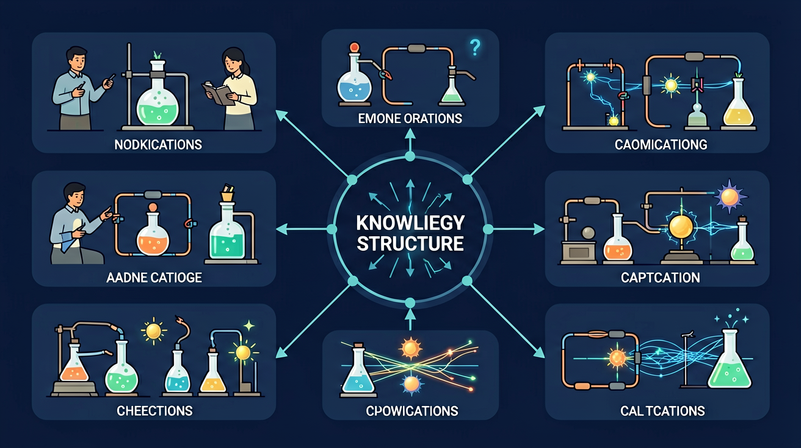
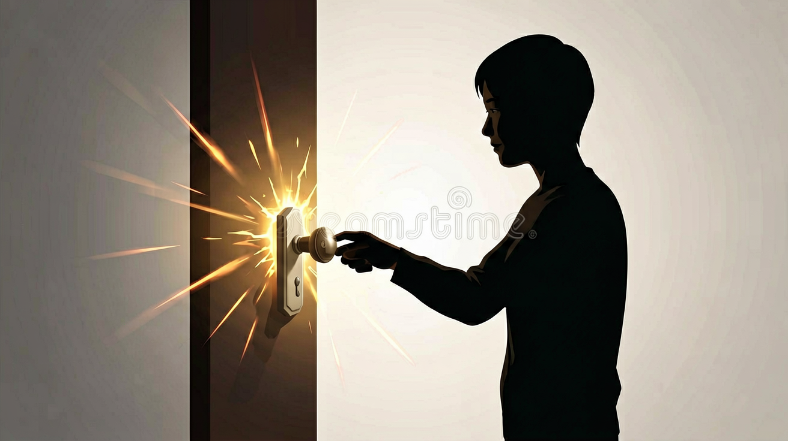

摩擦可使物体带电，电荷转移导致吸引轻小物体或放电火花。静电既有趣也需注意防静电场合。
吸纸屑、门把手触电一下。
以为摩擦创造电荷而非转移；正负混淆。
带电原因→相互作用→生活应用与防护。
摩擦起电的本质
摩擦起电本质是电子转移。
同种电荷相斥，异种相吸。
电荷中和时可产生火花。

同种电荷相互
异种电荷相互
脱毛衣噼啪声主要是
验电器张角变大说明
加油站要防静电，是因为
用三句话总结本课最关键的一条规律，并举一个生活例子。
勾选你已掌握的条目。
❓ 为什么冬天脱毛衣会有噼啪声？
❓ 为什么气球摩擦头发后会粘在墙上？
❓ 为什么有时候摸门把手会被电到？
学完这一课，这些问题你都能自信地回答。
🎯 能说出静电产生的三种常见方式
🎯 能判断不同材料摩擦后带电的正负性
🎯 能分析简单静电现象中的电荷转移过程
✅ 摩擦只是转移电子，不创造新电荷
💡 不理解电荷守恒定律
✅ 相同材料摩擦不会带电
💡 不了解摩擦起电的条件
口诀：摩擦生电不稀奇，电子转移要牢记
类比：静电就像衣服上的灰尘，摩擦后容易吸附
丝绸摩擦玻璃棒后，玻璃棒带正电是因为：
下列哪种方法不能防止静电积累？
若发现验电器金属箔张开角度变小，可能原因是：
And：学生见过冬天脱毛衣时的火花
But：不明白为什么会有噼啪声
Therefore：建立现象与电荷的联系
静电是静止的电荷，当两个物体摩擦时，电子会从一个物体转移到另一个物体。比如用塑料尺摩擦头发后，尺子能吸起小纸片——此时尺子带了约10^12个额外电子，产生0.0001库仑的电荷量（相当于头发少了这么多电子）。
🌍 撕开快递胶带时，胶带会粘在手上，这是因为快速分离时产生了静电转移。
用毛皮摩擦橡胶棒后，哪个物体带负电？
And：知道摩擦能起电
But：认为静电无法测量
Therefore：学习验电器量化静电
验电器通过金属箔张角测量电荷量。例如：带电橡胶棒接触验电器金属球时，箔片会张开30°角，每增加0.5μC（微库仑）电荷，角度增大约15°。实验室验电器最小可检测10^-9库仑电荷，相当于600万个电子。
🌍 加油站触摸静电消除器时，内部其实在检测你身上的电荷是否超过3000伏危险值。
验电器箔片张开说明什么？
And：会使用验电器
But：不知如何系统改变静电量
Therefore：掌握变量控制方法
通过控制变量研究静电：①固定材料（如羊毛），改变摩擦次数（5次/10次/15次），测得电荷量分别为0.8μC/1.6μC/2.4μC；②固定摩擦10次，换材料（羊毛/化纤/丝绸），电荷量分别为1.6μC/0.7μC/2.1μC。数据说明电荷量与摩擦次数成正比，与材料有关。
🌍 不同材质衣服摩擦产生的静电不同，化纤外套比棉质更容易产生5000伏以上的静电电压。
要研究摩擦次数对静电影响，应该固定：
点击节点跳转到对应章节；可切换布局。
先独立作答，再点选项查看对错与错因。
下列哪种情况最能增加静电吸附力？
以下哪项不是影响静电吸附力的因素？
在静电实验中，为什么气球能吸附在墙上？
静电现象中，带电物体能吸引____物体。
答案：轻小
带电物体能吸引轻小物体，如纸屑、头发等。
摩擦次数越多，静电吸附力____。
答案：越大
摩擦次数越多，静电产生越多，吸附力越大。
以下哪项最能解释静电现象？
设计实验探究摩擦次数、物体材质、接触面积对静电吸附力的影响。